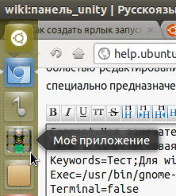
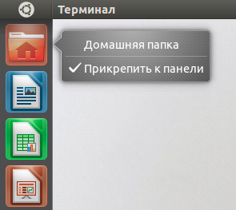
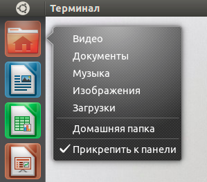

Все значки, которые отображаются в Главном меню1) и, соответственно, на панели Unity хранятся в двух директориях:
Ярлык приложения представляет собой файл с расширением .desktop, в котором указываются все параметры запуска и отображения приложения. Полный синтаксис их написания описан здесь.
Таким образом процедура добавления ярлыка своего приложения в Главное меню (и на панель Unity) сводится к созданию .desktop файла для своего приложения.
Для начала необходимо определиться нужен ли нам ярлык для всех пользователей или только для одного. Если вы в системе единственный пользователь, рекомендую создавать ярлыки в домашней папке (~/.local/share/applications/), потому что нет проблем с доступом к этим файлам и ваши труды не потеряются при переустановке системы2). В данном примере рассматривается случай создания .desktop файла в домашней папке, в противном случае необходимо заменить путь и редактировать файл от имени суперпользователя (к командам редактирования добавлять «sudo» без кавычек).
Ниже приведен шаблон desktop файла, для добавление его себе в систему нажмите Alt+F2, введите команду3)
gedit ~/.local/share/applications/my_app.desktop
и вставьте в редактор следующее содержимое:
[Desktop Entry]
Name=
Comment=
GenericName=
Keywords=
Exec=
Terminal=false
Type=Application
Icon=
Path=
Categories=
NoDisplay=false
Описание значения записей:
Строки Name и Exec- обязательны, остальные строки можно не заполнять и оставить пустыми!
После редактирования данный файл должен выглядеть так:
[Desktop Entry]
Name=Моё приложение
Comment=Моя замечательная программа
GenericName=Тестовая программа
Keywords=Тест;Для wiki;Vjt_ghbkj;Lkz wiki;
Exec=/usr/bin/gnome-terminal
Terminal=false
Type=Application
Icon=/home/speranza/Игры/Rocksndiamonds/graphics/gfx_classic/19032.png
Categories=
Path=/путь/к/директории/с/исполняющим/файлом
NoDiplay=false
Как видите в примере выше, строку Keywords нужно заполнить словами, по которым вы, вероятнее всего будете это приложение в последствии искать, разделенными точкой с запятой. При этом можно написать эти же слова в «неправильной» раскладке.
Добавление ярлыка на панель Unity
После создания .desktop файла перетянуть ярлык из Главного меню на панель не составит труда.

Статья, содержащая список и руководство по установке большого количества линз.
Квиклисты (англ. Quicklist) дают возможность создания собственных пунктов в контекстном меню ярлыков на панели Unity.
В этой статье представлены уже готовые квиклисты для большинства популярных программ.
Самый простой способ, это создать файл с именем имя_программы.desktop в папке ~/.local/share/applications. Затем скопировать содержимое приведенное ниже в этот файл и перенести его на панель Unity.
Для оформления быстрого списка лучше использовать значения «Name» и «Name[ru]» и т.д., что бы модифицированный файл был универсальным и работал в разных локалях.
Например:
Name=Open a New Window
Name[ru]=Открыть новое окно
Так как ярлык этой программы уже существует - мы его просто отредактируем.
Редактируемый файл:
sudo gedit /usr/share/applications/nautilus-home.desktop
Содержимое файла:
[Desktop Entry]
Name=Home Folder
Comment=Open your personal folder
TryExec=nautilus
Exec=nautilus --no-desktop
Icon=user-home
Terminal=false
StartupNotify=true
Type=Application
Categories=GNOME;GTK;Core;
OnlyShowIn=GNOME;Unity;
X-GNOME-Bugzilla-Bugzilla=GNOME
X-GNOME-Bugzilla-Product=nautilus
X-GNOME-Bugzilla-Component=general
X-Ubuntu-Gettext-Domain=nautilus
X-Ayatana-Desktop-Shortcuts=Videos;Documents;Music;Pictures;Downloads
[Videos Shortcut Group]
Name=Видео
Exec=nautilus Видео
TargetEnvironment=Unity
[Documents Shortcut Group]
Name=Документы
Exec=nautilus Документы
TargetEnvironment=Unity
[Music Shortcut Group]
Name=Музыка
Exec=nautilus Музыка
TargetEnvironment=Unity
[Pictures Shortcut Group]
Name=Изображения
Exec=nautilus Изображения
TargetEnvironment=Unity
[Downloads Shortcut Group]
Name=Загрузки
Exec=nautilus Загрузки
TargetEnvironment=Unity
Было - стало.
 